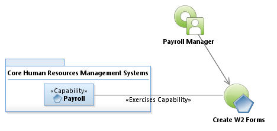
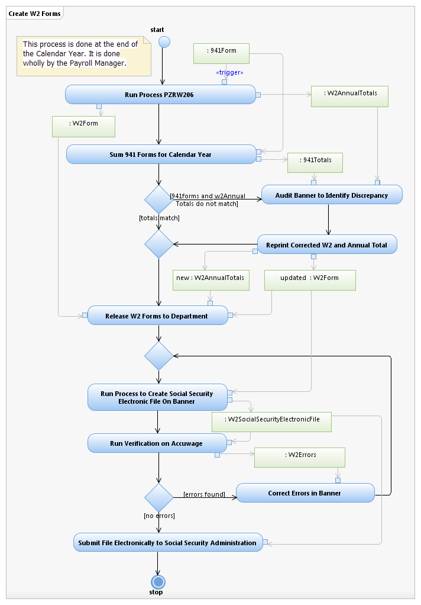

Use Case Model: Create W2 Forms
Architect: Aaron Brown, IT Enterprise Architect Senior
Date Last Modified: 10/22/2012
User
Review: Ingrid Whitley, Payroll Manager
Date:10/22/2012
The process by which W2 forms are generated annually. It is done by the Payroll Manager.
Follow link to Role Definitions

Use Case Model: Create W2 Forms

Activity Model:
Create W2 Forms